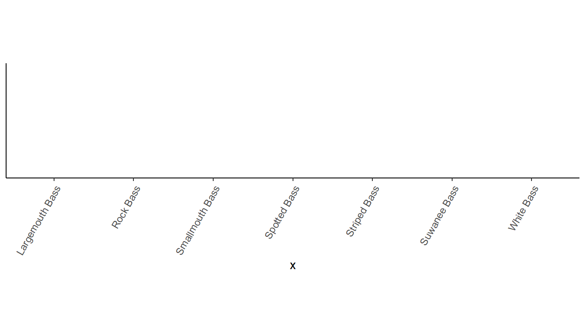

library(tidyverse) # for ggplot2 and dplyr
library(scales) # for help with scales
library(ggh4x) # for a variety of "hacks" described below
Description
This is a collection of methods that I have used to handle various axis-related issues in ggplot2. I will continue to update this post when I discover new “fixes.” Please send me questions, thoughts, or solutions for future updates.
Packages and Illustrative Plots
The following packages are used here. Also note that a function from lemon() is used below but :: was used so the entire package is not attached here.
The default theme will be theme_classic().
theme_set(theme_classic())Most of the examples below will use generic plots that show only an x- or y-axis, without plotting any actual data. For example, an x-axis for continuous data is constructed with demo_continuous() given a range of values for the x-axis.1
1 These demo_ functions are patterned off same name functions in scales.
demo_continuous(c(0,100))
In contrast, an x-axis for dates data is constructed with demo_datetime() given a range of dates for the x-axis.2
2 A format for the dates may be given in FMT. See ?strptime for code descriptions.
demo_date(c("1-Jan-2000","31-Dec-2020"))Some examples will have an x- and a y-axis and will include faceting.
demo_date(c("1-Jan-2000","31-Dec-2020","1-Jan-2000","31-Dec-2020"),
c(0,50,0,100),c("A","A","B","B"))Nearly all examples will be demonstrated only for the, though similar modifications can be made to the y-axis in a straightforward manner (replacing “x” with “y” in appropriate functions and arguments.)
Important
The use of the demo_ functions is to allow focus on the axes and not the data in the plot. There is no other reason to use the demo_ functions and, thus, I have not shown them or described them fully here. In “real-life” you will replace the demo_ functions with the code that creates your basic plot of interest and “add on” the other ggplot2 arguments described below to modify the axes.
Removing Axis Expansion
The limits or range of the axis can be controlled with limits= in scale_x_continuous().3 For example, the range of the x-axis is set from 0 to 100 below.
3 If the axes had categorical data then scale_x_discrete() would be used instead.
demo_continuous(c(0,100)) +
scale_x_continuous(limits=c(0,100))It is apparent though, that ggplot2 automatically extends or expands the axes for continuous variables by 5%.4 The amount of expansion is adjusted with expand=, which requires using expansion(). A multiplied amount is applied to both axis sides if a single value is given to mult= in expansion(). For example, neither side of the x-axis is expanded below (i.e., multiplier of 0).
4 Dates are also expanded by 5%, but categorical/discreate data is expanded by adding/subtracting 0.6 units.
demo_continuous(c(0,100)) +
scale_x_continuous(limits=c(0,100),expand=expansion(mult=0))
This can be problematic though as points at either extreme may be cutoff. For example if values at x=100 were present in this graph then they would be cutoff. If this issue occurred, it could be addressed by still removing the expansion on the left side of the x-axis, but including some expansion on the right side of the x-axis. Different amounts of expansion can be applied to the two sides of an axis by giving mult= a vector with two values, where the first value sets the left-side expansion and the second sets the right-side expansion. For example, the x-axis below has no expansion on the left side of the x-axis but 1% expansion on the right side.
demo_continuous(c(0,100)) +
scale_x_continuous(limits=c(0,100),expand=expansion(mult=c(0,0.01)))The axes can also be expanded by adding a small amount with add= in expansion(). Below the left side expansion is removed, but the right side is expanded by 5 units (years for these data).5
5 I used 5 here to clearly distinguish from the previous example.
demo_continuous(c(0,100)) +
scale_x_continuous(limits=c(0,100),expand=expansion(add=c(0,5)))
Specifying Only the Minimum Limit
A common problem that I have is that I want to force the plot to show the origin by setting the minimum limits for both the x- and y-axes at 0. However, I want to let ggplot2 determine the upper limit from the data, rather than me specifying it as in the previous section. This can be achieved by using NA in the upper limit position of limit=.
demo_continuous(c(20,100),c(10,50)) +
scale_x_continuous(limits=c(0,NA),expand=expansion(mult=0)) +
scale_y_continuous(limits=c(0,NA),expand=expansion(mult=0))This is especially useful if, for example, you want to show the origin in a faceted plot but still allow the upper limit on the y-axis to change for each facet. For example, include scales="free_y" in facet_wrap() allows the facets to have different y=axis ranges. However, also note here that the origin is not present on the plots.
demo_continuous(c(20,100,20,100),c(10,50,10,100),c("A","A","B","B")) +
scale_x_continuous(expand=expansion(mult=0)) +
scale_y_continuous(expand=expansion(mult=0)) +
facet_wrap(vars(grp),scales="free_y")Setting defined limits for the y-axis makes the origin present but then forces each facet to have the same overall range for the y-axis.
demo_continuous(c(20,100,20,100),c(10,50,10,100),c("A","A","B","B")) +
scale_x_continuous(expand=expansion(mult=0)) +
scale_y_continuous(limits=c(0,100),expand=expansion(mult=0)) +
facet_wrap(vars(grp),scales="free_y")However, each facet will have its own upper limit and the origin will be evident if the upper limit is set to NA.
demo_continuous(c(20,100,20,100),c(10,50,10,100),c("A","A","B","B")) +
scale_x_continuous(expand=expansion(mult=0)) +
scale_y_continuous(limits=c(0,NA),expand=expansion(mult=0)) +
facet_wrap(vars(grp),scales="free_y")
Specifying Breaks
ggplot2 does a good job, in my opinion, of selecting breaks/labels for the axes. However, there may be times when the breaks are not as you wish. Breaks for an axis can be defined in scale_x_continuous() by setting breaks= to a vector of values where the breaks should be shown. For example, three breaks are set below at 0, 25, and 100.
demo_continuous(c(0,100)) +
scale_x_continuous(breaks=c(0,25,100))More generally breaks are set at some constant interval. These breaks can be defined by creating a sequence of values with seq(), where the first argument is the start of the sequence, the second argument is the end of the sequence, and by= defines the interval for the sequence. For example, y-axis breaks from 0 to 100 in steps of 10 are shown below.
demo_continuous(c(0,100)) +
scale_x_continuous(breaks=seq(0,100,by=10))The scales package provides a helper function, breaks_width(), where only the interval value is given. For example, intervals of every 20 units are used below.
demo_continuous(c(0,100)) +
scale_x_continuous(breaks=breaks_width(20))In addition breaks_width() takes an optional offset= argument for where to start the sequence. For example, the intervals start at 5 below.
demo_continuous(c(0,100)) +
scale_x_continuous(breaks=breaks_width(20,5))
Note
Labels are placed only where you define them when using seq(), but labels may be placed outside the data, but within the expanded axis range when using breaks_width() (note the “105” in the previous example).
Specifying Tick Placement Relative to Axis
People6 have different preferences for the size of tick marks and whether they should be outside the plot, inside the plot, or cross the axis.
6 Most likely journals.
The lengths of tick marks are controlled with axis.ticks.length= in theme(). This argument takes a value returned from unit() which has a length value as its first argument and units of length in its units= argument. Positive numbers indicate tick marks that are outside the plot region. Here the tick marks are extended to a length of 10 pts7 outside the plot.
7 Other units are in, mm, and cm.
demo_continuous(c(0,100)) +
theme(axis.ticks.length=unit(10,units="pt"))Negative values move the tick marks inside the plot region.
demo_continuous(c(0,100)) +
theme(axis.ticks.length=unit(-10,units="pt"))And a vector with both a positive and a negative value make the tick marks cross the axis.
demo_continuous(c(0,100)) +
theme(axis.ticks.length=unit(c(-10,10),units="pt"))
The length of only one axis can be set using axis.ticks.length.(x|y)=. For example, only the y-axis ticks are moved inside the plot region below.
demo_continuous(c(0,100),c(0,50)) +
theme(axis.ticks.length.y=unit(-5,units="pt"))
Placing Minor Ticks
It is often useful to have “minor” ticks between the labeled “major” ticks. “Minor breaks” are added to a scale with minor_breaks=, but these only appear as grid lines and not as ticks on the axis. Thus, if a theme is being used that does not show grid lines (e.g., theme_classic()), then these minor breaks are irrelevant.
Below are two methods to add minor ticks. I think the first is better but I kept the second here as I thought it was pretty cool and parts of the technique described there may be useful to derive solutions to other issues. Also, though I have not tested, I suspect that the second method might work more reliably when combined with functions from other packages.
First Method (Minor Ticks of Different Sizes)
The ggh4x package provides a method for adding unlabeled minor ticks between the labeled major ticks. With this method breaks= is used to define the labeled major tick locations and minor_breaks= is used to define the unlabeled minor tick locations. Then use guide="axis_minor"8 in scale_x_continuous() to make the minor ticks visible.
8 This is what ggh4x provides.
demo_continuous(c(0,100)) +
scale_x_continuous(breaks=seq(0,100,by=20),
minor_breaks=seq(0,100,by=1),guide="axis_minor") +
theme(axis.ticks.length=unit(5,units="pt"))Be careful, though, that when using breaks_width() the minor ticks will extend into the “expanded” portion of the scale.
demo_continuous(c(0,100)) +
scale_x_continuous(breaks=breaks_width(20),
minor_breaks=breaks_width(1),guide="axis_minor") +
theme(axis.ticks.length=unit(5,units="pt"))Minor ticks can be set to a different length with ggh4x.axis.ticks.length.minor= for setting the lengths of the minor ticks in theme().9 The length of the minor ticks is set relative to the length of the major ticks through rel(). In the example below, rel(0.5) is used to make the minor ticks 50% of the length of the major ticks.
9 This argument to theme() is provided by ggh4x.
demo_continuous(c(0,100)) +
scale_x_continuous(breaks=seq(0,100,by=20),
minor_breaks=seq(0,100,by=1),guide="axis_minor") +
theme(axis.ticks.length=unit(5,units="pt"),
ggh4x.axis.ticks.length.minor=rel(0.5))Second Method
The text associated with the breaks/ticks is controlled for both axes with axis.text= or for individual axes with axis.text.(x|y)= in theme(). For example, the tick mark labels for the x-axis are changed to red below.10
10 I also lengthened the ticks for illustrative purposes.
demo_continuous(c(0,100)) +
theme(axis.ticks.length=unit(5,units="pt"),
axis.text.x=element_text(color="red"))Multiple colors can also be used, which will be “recycled” if fewer colors are given then tick mark labels. Below two colors are given, but because there are five ticks, the colors are “recycled” resulting in alternating colors.11
11 This use of a vector of colors is not an official feature of ggplot2 and, thus, a warning will be issued.
demo_continuous(c(0,100)) +
theme(axis.ticks.length=unit(5,units="pt"),
axis.text.x=element_text(color=c("red","blue")))More colors can be given that better demonstrate the recycling property.
demo_continuous(c(0,100)) +
theme(axis.ticks.length=unit(5,units="pt"),
axis.text.x=element_text(color=c("red","blue","green")))Now suppose that labels are desired at intervals of 25, as above, with unlabeled ticks at interals of 5. The “trick”12 here is to create a sequency for every tick (major or minor), but then set the label color to black for the first label and then NA for the next four labels. The NA “color” means to use no color. Thus, the “0” label will be black, but the “5”, “10”, “15”, and “20” will have no color and, thus, will not be visible. Given the “recycling property discussed above this pattern will be repeated so that the”25” is black but then “30” to “45” will have no color, “50” will be black, etc.13
12 This “trick” came from this StackOverflow answer.
13 Make sure you note below that the breaks were set to a sequence with an interval of 5.
demo_continuous(c(0,100)) +
scale_x_continuous(breaks=seq(0,100,by=5)) +
theme(axis.ticks.length=unit(5,units="pt"),
axis.text.x=element_text(color=c("black","NA","NA","NA","NA")))There are times when it may be easier to use rep() to repeat the required NA values. For example, suppose that ticks are placed at intervals of 1 but that labels should be placed only at intervals of 10. In this case then, the “black” color should be followed by 9 “NA”s, as demonstrated below.
demo_continuous(c(0,100)) +
scale_x_continuous(breaks=seq(0,100,by=1)) +
theme(axis.ticks.length=unit(5,units="pt"),
axis.text.x=element_text(color=c("black",rep(NA,9))))
Tip
Remember to initially (in scale_x_continuous()) make tick marks at all of the values that you desire a tick mark (of some sort) and then make sure to have as many NAs in the colors as unlabeled ticks between labeled ticks.
Note
I don’t know of a way to have differently sized major and minor tick marks using this method.
Rotating Axis Labels
Sometimes x-axis labels get crowded. One way to deal with this issue is to rotate the labels vertically from their horizontal position. The labels can be rotated by using angle= in element_text() for axis.text.x= in theme=. For example, the code below rotates the x-axis lables by 90o.
demo_continuous(c(0,100)) +
scale_x_continuous(breaks=seq(0,100,by=5)) +
theme(axis.text.x=element_text(angle=90))Note above however that the labels are not horizontally centered on the ticks. Use vjust=0.5 in element_text() as described in this post to center the labels on the ticks.
demo_continuous(c(0,100)) +
scale_x_continuous(breaks=seq(0,100,by=5)) +
theme(axis.text.x=element_text(angle=90,vjust=0.5))However, note here how some labels are closer to the ticks then others (e.g., compare “5” to “10” or “95” to “100”). The right (now the top after rotation) of the label can be justified on the tick by including hjust=1 in element_text().
demo_continuous(c(0,100)) +
scale_x_continuous(breaks=seq(0,100,by=5)) +
theme(axis.text.x=element_text(angle=90,vjust=0.5,hjust=1))Of course, labels can be rotated with any degree of rotation, though it may take some fiddling with vjust= and hjust= to get the labels as you wish with respect to the ticks.
demo_continuous(c(0,100)) +
scale_x_continuous(breaks=seq(0,100,by=5)) +
theme(axis.text.x=element_text(angle=45,hjust=0.8,vjust=0.9))I find that I use label rotation more often with dates14 …
14 Displaying dates is discussed in nore detail below
demo_date(c("1-Jan-2022","31-Dec-2023")) +
scale_x_date(breaks="2 months",date_labels="%b-%y") +
theme(axis.text.x=element_text(angle=45,hjust=1,vjust=1))… and categories.
demo_discrete(c("Largemouth Bass","Smallmouth Bass","Suwanee Bass","Spotted Bass",
"Rock Bass","White Bass","Striped Bass")) +
theme(axis.text.x=element_text(angle=60,hjust=1,vjust=1))
Axes for Each Facet
facet_wrap() is an amazing feature of ggplot() for creating subpanels (or facets) by groups of data. However, by default, the x-axis is not shown for panels in the same column or y-axis is not shown for panels in the same row. This can make it difficult to explore values in the panels without the axis (e.g., y values in the right panel below).
demo_continuous(c(0,100,0,100),c(0,50,0,100),c("A","A","B","B")) +
facet_wrap(vars(grp))Using scales="free_(x|y)" can be used to allow each x- or y-axis to be different (i.e., “free”) in each panel. With this, the entire axis will be shown in each panel. For example, the y-axis is freed below and it is seen that the y-axis, ticks, and labels fully appear with each panel.
demo_continuous(c(0,100,0,100),c(0,50,0,100),c("A","A","B","B")) +
facet_wrap(vars(grp),scales="free_y")In cases where you want to use the same axis for each facet (i.e., you don’t want to use a different scale for each facet) then it is nice to show the axis and tick marks for each panel, but not the labels. Replacing facet_wrap() with facet_rep_wrap() from lemon provides the axis but not the labels for each panel.15
15 More and longer ticks were added to make the change more obvious.
demo_continuous(c(0,100,0,100),c(0,50,0,100),c("A","A","B","B")) +
scale_y_continuous(breaks=seq(0,100,by=10)) +
lemon::facet_rep_wrap(vars(grp)) +
theme(axis.ticks.length=unit(5,units="pt"))This method was demonstrated in this post.
Control Axis Limits for Each Facet
It was shown above that the limits for axes in faceted plots can be the same for all facets if two values age given to limits= in scale_(x|y)_continuous(). Another example showed that the lower limit can be controlled across facets but the upper limit can differ by facet if the lower limit is set to a value and the upper limit is NA in limits=. However, in some situations you may want to control both the lower and upper limits and have either (or both) of those values differ across facets. This is possible with facetted_post_scales() from the ggh4x package.
facetted_post_scales() has both an x= and y= argument for defining the scales of the x- and y-axis, respectively. Each of these can receive a list that must have as many items as there are facets/panels in the plot. Each item in this list contains directives for how to define the axis for each facet/panel in order. If a facet/panel should not be modified then NULL must appear in the spot in the list corresponding to that facet/panel.
The example below has two facet/panels, so the list given to x= or y= must have two items in it. In the example below, only the y-axes are modified. The first facet/panel will have a y-axis with ticks at every 5 units from 0 to 25. The second facet/panel will have a y-axis with ticks at every 10 units from 0 to 100. Importantly, as only the y-axis is being modified scales="freey_y" must be used in facet_wrap(). If only the x-axis was modified then make sure scales="freey_x" is used and if both axes are to be modified then include scales="freey".
demo_continuous(c(0,100,0,100),c(0,25,0,100),c("A","A","B","B")) +
scale_y_continuous(breaks=seq(0,100,by=10)) +
facet_wrap(vars(grp),scales="free_y") +
facetted_pos_scales(
y=list(
scale_y_continuous(breaks=seq(0,25,by=5)),
scale_y_continuous(breaks=seq(0,100,by=10))
))The x-axis can also be controlled with a separate list to facetted_pos_scales(). In this example, the x-axis for the first facet/panel is not modified, but the x-axis for the second facet/panel is modified to have minor tick mark labels.16
16 This odd construction is just for illustrative purposes.
demo_continuous(c(0,100,0,100),c(0,25,0,100),c("A","A","B","B")) +
scale_y_continuous(breaks=seq(0,100,by=10)) +
facet_wrap(vars(grp),scales="free") +
facetted_pos_scales(
y=list(
scale_y_continuous(breaks=seq(0,25,by=5)),
scale_y_continuous(breaks=seq(0,100,by=10))
),
x=list(
NULL,
scale_x_continuous(minor_breaks=seq(0,100,5),
guide="axis_minor")
))
Controlling Numeric Label Format
Digits
There will be times when the axis displays more or fewer digits than you would prefer.
demo_continuous(c(0,100)) +
scale_x_continuous(breaks=breaks_width(100/6))label_number() from the scales package17 provides accuracy= which can be used to control the number of decimals shown. This argument simply takes a value that illustrates the number of decimal places to display. For example, 0.01 and 0.07 would both result in two decimals places being shown, whereas 0.003 would show 3 and 1 would show none.
17 Make sure the package is attached with library(scales) as was done at the beginning of this post.
demo_continuous(c(0,100)) +
scale_x_continuous(breaks=breaks_width(100/6),
label=label_number(accuracy=0.01))demo_continuous(c(0,100)) +
scale_x_continuous(breaks=breaks_width(100/6),
label=label_number(accuracy=1))Adornments (Comma, Dollar Signs, etc.)
scales also provides label_comma() to produce labels with commas at the appropriate multiples of thousands.
demo_continuous(c(0,10000)) +
scale_x_continuous(label=label_comma())This same effect may be obtained with label_number(), with big.mark=",".
demo_continuous(c(0,100000)) +
scale_x_continuous(label=label_number(big.mark=","))A dollar sign may be added as a prefix to the labels with label_dollar() (also noting that 0 or 2 decimals and commas will be shown)
demo_continuous(c(0,10000)) +
scale_x_continuous(label=label_dollar())
This same effect can be obtained with label_number() with prefix="$" (and, if necessary, adding commas with big.mark= and controlling decimals with accuracy=).
demo_continuous(c(0,10000)) +
scale_x_continuous(label=label_number(prefix="$",big.mark=","))A percent sign may be added as a suffix to the labels with label_percent(). However, beware that the values will first be multiplied by 100 (i.e., assuming proportions so converting to percentages).
demo_continuous(c(0,1)) +
scale_x_continuous(label=label_percent())The suffix is easily added with label_number(), but note that it does not automatically multiply the values by 100. Thus, this would be useful if your data was already percentages.
demo_continuous(c(0,1)) +
scale_x_continuous(label=label_number(suffix="%"))However, the label values can be multiplied by 100 with scale=100, thus using label_number() to reproduce the label_percent() result.
demo_continuous(c(0,1)) +
scale_x_continuous(label=label_number(suffix="%",scale=100))
Handling Large or Small Numbers
It is worth noting that label_number() forces all labels to be numeric not in scientific notation. As an example, the default below shows labels in scientific notation.
demo_continuous(c(0,1e7))However, label_number() forces these labels out of scientific notation.
demo_continuous(c(0,1e7)) +
scale_x_continuous(label=label_number(big.mark=","))You can better control the scientific notation with label_scientific(). For example, three significant digits is shown below.
demo_continuous(c(0,1e7)) +
scale_x_continuous(breaks=breaks_width(1e7/6),
label=label_scientific(digits=3))Another way to display larger numbers is to rescale them and denote the rescaling in the axis label. For example, labels from 0 to 1,000,000 might be rescaled to “millions”. This “rescaling” can be performed on the labels rather than on the data with scale= in scale_x_contiuous(). In the example below, each label will be multiplied by 1/1e6 (i.e., divided by 1e6 or a million) before being displayed. The axis “name” was modified to explain this rescaling.
demo_continuous(c(0,1e6)) +
scale_x_continuous(label=label_number(scale=1/1e6),
name=("X (millions)"))Suppose that a variable had been recorded in kilograms …
demo_continuous(c(0,5)) +
scale_x_continuous(name=("X (kg)"))… but you want to display it in pounds.18
18 Note that 1 kg = 2.20462 lbs.
demo_continuous(c(0,5)) +
scale_x_continuous(label=label_number(big.mark=",",scale=2.20462),
name=("X (lbs)"))Note that the rescaling comes AFTER the tick mark positions have been defined on the original scale. Thus, in the last example, tick marks at places defined by pounds, rather than kilograms, will need to use data that was converted to pounds before making the plot.
Dates on Axes
Brief Primer on Dates in R
Dealing with dates in R will force you to use some special codes defining aspects of the dates. These codes are described in ?strptime. The codes that I most often use with dates are shown in the table below. Note that there are other codes to deal with day names, weeks in the year, etc., along with codes to deal with time.
| Group | Code | Description |
|---|---|---|
| Day | %d | Day of month as number (01-31) |
| %e | Day of month as number with leading space (” 1”, not “01”) | |
| Month | %b | Abbreviated month name (Jan-Dec) |
| %B | Full month name (January-December) | |
| %m | Month as a decimal number (01-12) | |
| Year | %Y | Four-digit year (i.e., with century; e.g., 1999, 2017) |
| %y | Two-digit year (i.e., without century; e.g., 99, 17) |
These codes can be combined into strings that describe how dates are formatted. For example, %d-%b-%Y indicates that the dates are in day, abbreviated month name, and four-digit year all separated with hyphens format (e.g., “9-Jul-1967”). Alternatively, %m/%d/%Y indicates that the dates are in numeric month, numeric day, and four-digit year all separated by forward slashes format (e.g., “07/09/1967”)
Strings can be converted to dates with as.Date(), with the string as the first argument and a string that describes the date format in format=. For example, the following converts two strings in %d-%b-%Y format to “Date” objects.
tmp <- as.Date(c("1-May-2020","30-Jul-2020"),format="%d-%b-%Y")
str(tmp)Date[1:2], format: “2020-05-01” “2020-07-30”
Tip
The lubridate packages provides other functions for dealing with dates.
Setting Axis Limits
The default axis labels for date data depends on the range of the dates. The next three examples, show date ranges of approximately a month, a year, and five years.
demo_date(c("1-May-2020","31-May-2020"))demo_date(c("1-May-2020","30-Apr-2021"))demo_date(c("1-Nov-2015","30-Jul-2020"))Date axes are modified with scale_x_date(). The limits of the axis can be controlled with limits=, though the vector given here must be valid dates so you will need as.Date(). For example, the axis is extended beyond the month of May in the example below. Note how this changed the format of the labels (from the first example above).19
19 Formatting the labels is discussed in the next section.
demo_date(c("1-May-2020","31-May-2020")) +
scale_x_date(limits=as.Date(c("1-Apr-2020","30-Jun-2020"),format="%d-%b-%Y"))Controlling Breaks
Tick mark labels can be controlled by giving specific dates to breaks= in scale_x_date().
demo_date(c("1-May-2020","31-May-2020")) +
scale_x_date(breaks=as.Date(c("1-May-2020","8-May-2020","15-May-2020",
"22-May-2020","29-May-2020"),format="%d-%b-%Y"))However, this may (likely?) format the dates in an unwanted way. For example, in the example above it may not be necessary to include the year, and it may be preferred to use the month abbreviations. The format of date labels is controlled with labels= using label_date() to format the date with codes as defined above. The example below shows the month abbreviation and day only.
demo_date(c("1-May-2020","31-May-2020")) +
scale_x_date(breaks=as.Date(c("1-May-2020","8-May-2020","15-May-2020",
"22-May-2020","29-May-2020"),format="%d-%b-%Y"),
labels=label_date("%b %d"))
Setting the breaks with a vector of all breaks can be tedious. However, breaks_width= introduced above can be used to set breaks with key words. For example, date_breaks="week" sets breaks at every week.
demo_date(c("1-May-2020","31-May-2020")) +
scale_x_date(breaks=breaks_width("week"),
labels=label_date("%b %d"))
If these dates don’t start on your preferred date then use offset= to “move” the starting data. Here I wanted the dates to start on “May-01” rather than “May-04” so I moved the dates forward by three days with offset=-3.
demo_date(c("1-May-2020","31-May-2020")) +
scale_x_date(breaks=breaks_width("week",offset=-3),
labels=label_date("%b %d"))demo_date(c("1-May-2020","31-May-2020")) +
scale_x_date(breaks=breaks_width("2 weeks",offset=-10),
labels=label_date("%b %d"))Other key words for breaks_width= include day, month, and year.20 For example, the approximate year example from above gets monthly breaks below.21
20 And also sec, min, and hour for time data.
21 And are labeled with the month abbreviation and the year without the century.
demo_date(c("1-May-2020","30-Apr-2021")) +
scale_x_date(breaks=breaks_width("month"),
labels=label_date("%b %y"))breaks_width() is particularly powerful because any of the key words can be made plural and then a number added in front of it to make breaks at those intervals. For example, the example immediately above is modified below to have breaks every three months.
demo_date(c("1-May-2020","30-Apr-2021")) +
scale_x_date(breaks=breaks_width("3 months"),
labels=label_date("%b %y"))Again, these breaks may not start where you want them to. Here offset= can be used as above but you can include keyword units. For example, the starting break is moved two months earlier below.
demo_date(c("1-May-2020","30-Apr-2021")) +
scale_x_date(breaks=breaks_width("3 months",offset="-2 months"),
labels=label_date("%b %y"))Minor ticks can be added using these same strategies along with the methods from ggh4x shown above.
demo_date(c("1-May-2020","30-Apr-2021")) +
scale_x_date(breaks=breaks_width("3 months",offset="-2 months"),
minor_breaks=breaks_width("1 months",offset="-2 months"),
labels=label_date("%b %y"),
guide="axis_minor") +
theme(axis.ticks.length.x=unit(10,unit="pt"),
ggh4x.axis.ticks.length.minor=rel(0.5))
Reuse
Citation
BibTeX citation:
@misc{h.ogle2023,
author = {Derek H. Ogle},
title = {Axis {Magic}},
date = {2023-03-15},
url = {https://fishr-core-team.github.io/fishR//blog/posts/2023-3-15-Axis_Magic},
langid = {en}
}
For attribution, please cite this work as:
Derek H. Ogle. 2023, March 15. Axis
Magic.